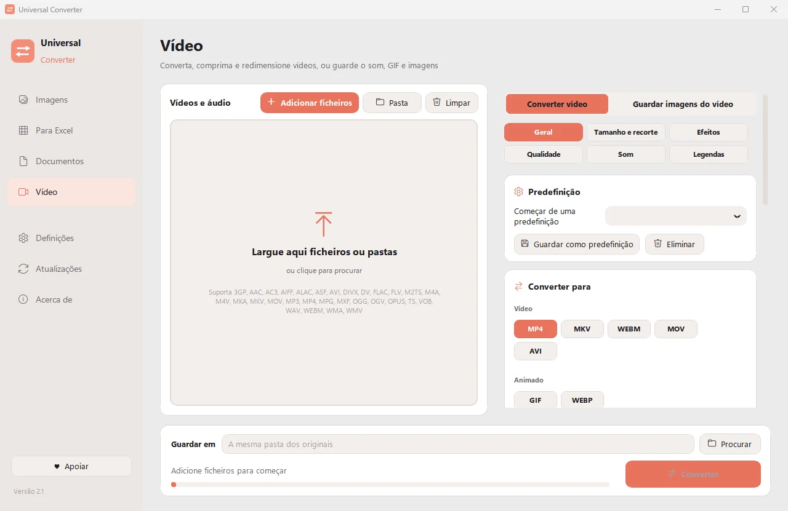

Criar um GIF a partir de um vídeo
Escolha o início, o fim e o tamanho, e o Universal Converter cria um pequeno GIF ou WebP animado que reproduz em qualquer lado.
Transferir para Windows
Gratuito · Windows 10 e 11, 64 bits
Como fazer
- Abra o Universal Converter e escolha Vídeo à esquerda.
- Arraste os ficheiros ou uma pasta inteira para a janela, ou clique em Adicionar ficheiros.
- Escolha GIF em Converter para e defina o intervalo de tempo e o tamanho.
- Clique em Converter. Os novos ficheiros são guardados junto dos originais ou na pasta que escolher.

Porquê offline?
O Universal Converter trabalha no seu próprio computador. Os seus ficheiros continuam privados, ficheiros grandes não são problema e funciona sem ligação à internet.
Mais coisas que faz
- Comprimir um vídeo sem o enviar
- Converter MKV, MOV, AVI e WMV para MP4
- Guardar o som de um vídeo em MP3
- Passar tabelas de um PDF para Excel
- Juntar fotos num só PDF
- Converter um PDF para Word
- Juntar vários ficheiros num PDF
- Copiar o texto de uma imagem (OCR)
- Converter WEBP para JPG ou PNG
- Redimensionar imagens ou reduzi-las a um tamanho de ficheiro